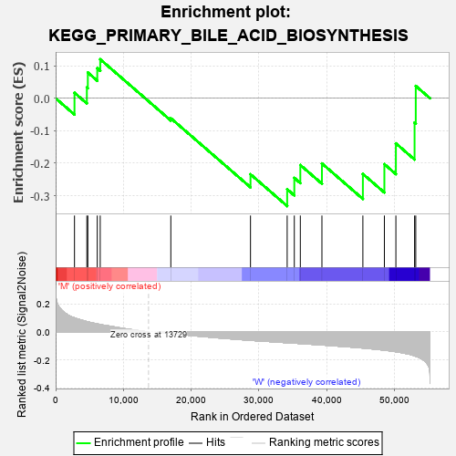
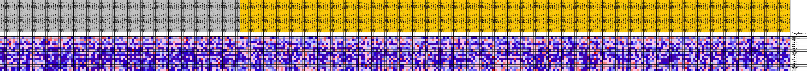
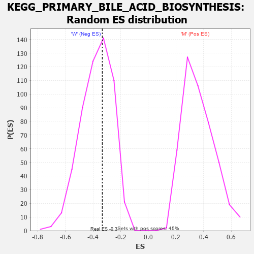

| Dataset | MUC16.MUC16.cls#M_versus_W.MUC16.cls#M_versus_W_repos |
| Phenotype | MUC16.cls#M_versus_W_repos |
| Upregulated in class | W |
| GeneSet | KEGG_PRIMARY_BILE_ACID_BIOSYNTHESIS |
| Enrichment Score (ES) | -0.33220407 |
| Normalized Enrichment Score (NES) | -0.8851457 |
| Nominal p-value | 0.609489 |
| FDR q-value | 1.0 |
| FWER p-Value | 0.999 |

| PROBE | DESCRIPTION (from dataset) | GENE SYMBOL | GENE_TITLE | RANK IN GENE LIST | RANK METRIC SCORE | RUNNING ES | CORE ENRICHMENT | |
|---|---|---|---|---|---|---|---|---|
| 1 | SLC27A5 | na | 2784 | 0.100 | 0.0170 | No | ||
| 2 | SCP2 | na | 4609 | 0.074 | 0.0335 | No | ||
| 3 | HSD3B7 | na | 4753 | 0.072 | 0.0793 | No | ||
| 4 | AKR1D1 | na | 6145 | 0.057 | 0.0925 | No | ||
| 5 | HSD17B4 | na | 6583 | 0.053 | 0.1200 | No | ||
| 6 | AKR1C4 | na | 17007 | -0.011 | -0.0616 | No | ||
| 7 | CYP27A1 | na | 28768 | -0.060 | -0.2342 | No | ||
| 8 | AMACR | na | 34183 | -0.077 | -0.2803 | Yes | ||
| 9 | CYP7A1 | na | 35237 | -0.080 | -0.2454 | Yes | ||
| 10 | CYP39A1 | na | 36125 | -0.083 | -0.2057 | Yes | ||
| 11 | BAAT | na | 39313 | -0.093 | -0.2008 | Yes | ||
| 12 | CYP8B1 | na | 45359 | -0.115 | -0.2331 | Yes | ||
| 13 | CYP7B1 | na | 48533 | -0.130 | -0.2030 | Yes | ||
| 14 | CYP46A1 | na | 50233 | -0.141 | -0.1390 | Yes | ||
| 15 | CH25H | na | 52991 | -0.170 | -0.0748 | Yes | ||
| 16 | ACOX2 | na | 53167 | -0.173 | 0.0380 | Yes |

